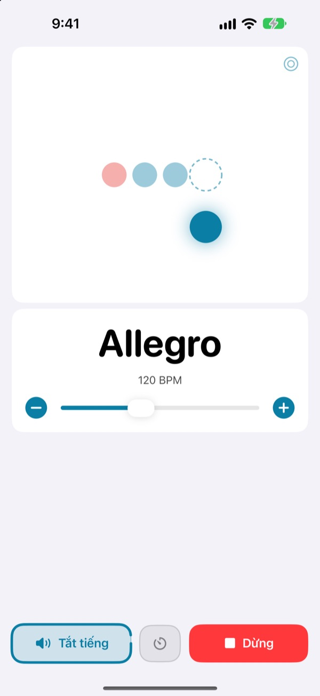
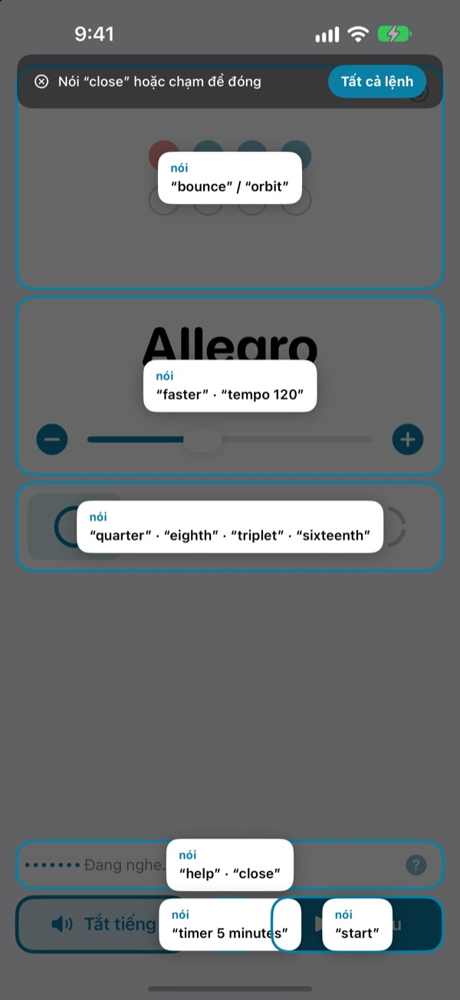
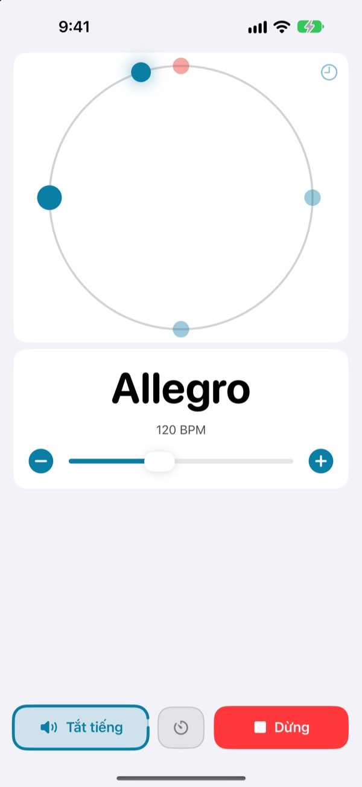
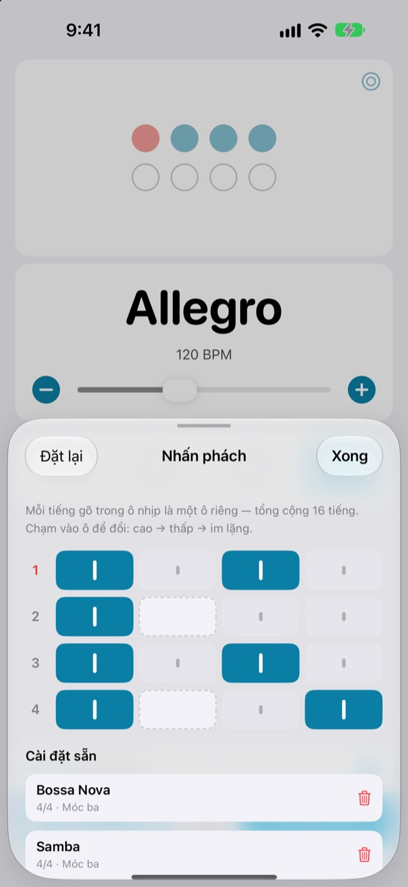

Hai tay trên nhạc cụ,
đổi tốc độ bằng lời
Đang chơi mà nói faster là tiếng gõ nhanh lên. Không phải với tay lên màn hình, không phải dừng lại để đổi tốc độ.
Máy gõ nhịp đầy đủ và điều khiển bằng giọng nói đều miễn phí.

Thử nói xem
Bấm một nút, hoặc bật micrô rồi nói bằng tiếng Anh. Sẽ có tiếng gõ phát ra, bạn nhớ để ý âm lượng nhé.
Chỉ muốn chỉnh tốc độ một chút mà mất luôn cảm hứng?
Đặt vĩ xuống, ngậm phím gảy, chạm màn hình hai lần, và cái cảm giác vừa bắt được đã biến mất. Not My Tempo đổi tốc độ chỉ bằng một từ, ngay trong tư thế bạn đang chơi.
Nói là theo ngay
Dùng những từ tiếng Anh ngắn như start, faster hay tempo 120. Ứng dụng bắt đầu nghe ngay khi mở, không cần bật Điều khiển bằng giọng nói của iOS hay bất kỳ cài đặt trợ năng nào.
Quên lệnh? Nói help và mọi câu bạn có thể dùng sẽ hiện ngay trên màn hình.

Nhìn thấy cả phách
Chọn một trong ba kiểu hiển thị: nảy, quỹ đạo hoặc vòng. Phách đầu ô nhịp hiện màu đỏ và gõ to hơn.
Chạm theo nhịp trên vòng quỹ đạo để xem bạn gõ sát đến đâu.

Lưu nhấn phách cho từng bài
Đặt từng tiếng gõ trong ô nhịp là mạnh, nhẹ hoặc im lặng, rồi lưu thành cài đặt sẵn cho từng bài. Bossa nova hay samba, chỉ cần làm một lần, lần sau chọn là xong. (Pro)

Bắt đầu chỉ với ba bước
- 1
Mở ứng dụng
Ứng dụng bắt đầu nghe ngay khi mở.
- 2
Cho phép micrô
Chỉ lần đầu ứng dụng mới xin quyền dùng micrô và nhận dạng giọng nói.
- 3
Nói hoặc chạm
Lệnh nào cũng có nút tương ứng trên màn hình.
Những lệnh bạn có thể nói
- start · stop
- phát, dừng
- faster · slower
- tăng hoặc giảm 5 BPM
- up · down
- tăng hoặc giảm 1 BPM
- tempo 120
- nhảy thẳng tới tốc độ mong muốn
- double · half
- nhanh gấp đôi, chậm một nửa
- three beats
- đổi số phách trong ô nhịp
- quarter · eighth · triplet · sixteenth
- chia nhỏ phách thành nốt đen, móc đơn, chùm ba, móc kép
- louder · quieter · mute
- tiếng gõ to hơn, nhỏ hơn, tắt tiếng
- volume 60
- đặt âm lượng theo phần trăm
- bounce · orbit
- đổi kiểu hiển thị phách
- timer 5 minutes
- hẹn giờ luyện tập
- practice
- tăng dần tốc độ trong lúc luyện (Pro)
- tune
- mở máy lên dây (Pro)
- help
- xem tất cả các lệnh
- close · done
- đóng bảng đang mở
Nhận dạng giọng nói chạy bằng tiếng Anh (Mỹ), nên các lệnh được nói bằng từ tiếng Anh, chưa hỗ trợ lệnh tiếng Việt. Giao diện ứng dụng hiển thị bằng tiếng Việt, và lệnh nào cũng có thể bấm nút thay thế.
Máy gõ nhịp miễn phí, cần thêm thì có Pro
Miễn phí
- Toàn bộ lệnh giọng nói
- Nhịp từ 1 đến 8 phách, nhấn mạnh phách đầu
- Chia phách thành nốt đen, móc đơn, chùm ba và móc kép
- Ba kiểu hiển thị: nảy, quỹ đạo và vòng
- Chạm để lấy nhịp và kiểm tra độ đều nhịp
- Hẹn giờ luyện tập
Not My Tempo Pro
- Chế độ luyện tập: thêm vài BPM sau mỗi vài ô nhịp cho tới tốc độ mục tiêu
- Trình chỉnh nhấn phách với cài đặt sẵn cho từng bài
- Máy lên dây bán cung
Gói năm có dùng thử miễn phí, hoặc mua trọn đời một lần
Điều khiển bằng giọng nói và các tính năng trợ năng sẽ luôn miễn phí cho mọi người. Nếu bạn mua ứng dụng trước khi có Pro, bạn đã dùng được mọi tính năng Pro rồi.
Câu hỏi thường gặp
Tôi nói tiếng Việt được không?
Nhận dạng giọng nói chạy bằng tiếng Anh (Mỹ), nên lệnh là những từ tiếng Anh như start hay faster. Lệnh nào cũng ngắn nên dùng một lúc là quen, và lệnh nào cũng có thể bấm nút thay thế.
Ứng dụng không nghe thấy tôi.
Hãy xem trạng thái micrô có hiện “Đang nghe” không. Nếu đang tắt, bấm “Nghe”. Ở chỗ ồn hoặc khi mở loa to, hãy dùng tai nghe để tiếng gõ không lọt vào micrô, ứng dụng sẽ nghe rõ hơn nhiều.
Ứng dụng tự ngừng nghe.
Để tiết kiệm pin, ứng dụng ngừng nghe sau vài phút không có lệnh nào. Bấm “Nghe” để bật lại.
Tốc độ bị nhận thành một nửa hoặc gấp đôi.
Nói double hoặc half là sửa được ngay.
Dùng máy lên dây thế nào?
Nói tune hoặc bấm nút hình sóng âm trên thẻ tốc độ. Chơi một nốt, khi kim chỉ vào vùng xanh lá là đã đúng cao độ. Nói close để thoát.
Tôi đang dùng Điều khiển bằng giọng nói của iOS.
Hãy tắt micrô riêng của ứng dụng và điều khiển bằng cách nói tên nút. Nút nào cũng có nhãn VoiceOver.
Giọng nói của tôi có bị gửi đi đâu không?
Không. Giọng nói được nhận dạng ngay trên thiết bị, không ghi âm, không lưu trữ, không gửi đi. Máy gõ nhịp, điều khiển bằng giọng nói và máy lên dây đều dùng được khi không có mạng.
Hủy gói đăng ký thế nào?
Vào Cài đặt > Tài khoản Apple > Đăng ký. Gói năm tự động gia hạn trừ khi bạn hủy ít nhất 24 giờ trước khi kỳ hiện tại kết thúc. Gói trọn đời chỉ thanh toán một lần.
Có câu hỏi hay góp ý? Hãy gửi về leeo@kakao.com.